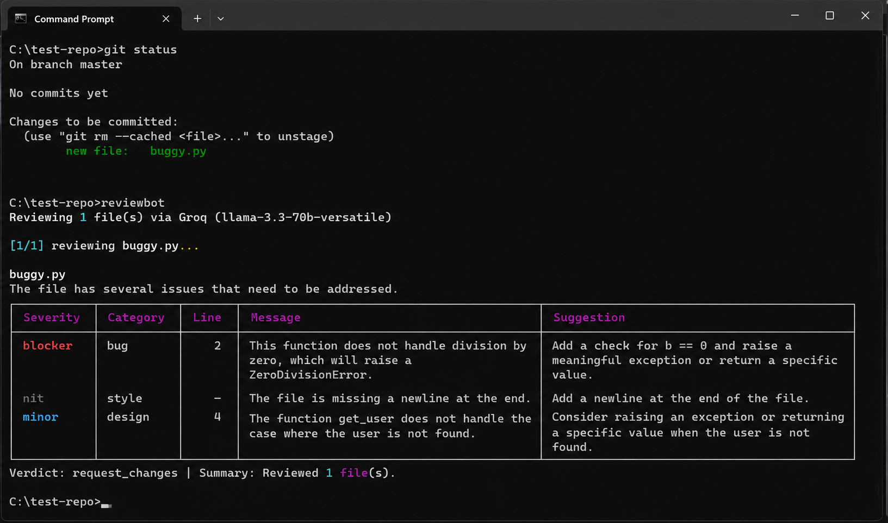

Git-native sources
Review staged changes, the last commit, a single file, the last `N` commits, or everything since a ref.
Review staged changes, commit ranges, and follow-up diffs with structured findings, mode-based review lenses, and repo-local history.
pipx install git+https://github.com/Nilay-Mehta/reviewbot.git

This deterministic demo is a guided playback of the workflow documented in the repo. It does not call Groq, Ollama, Gemini, or any live backend from the browser.
The repo points to a practical developer tool: choose what changed, choose how you want it reviewed, and keep history around for follow-up passes.
Review staged changes, the last commit, a single file, the last `N` commits, or everything since a ref.
Switch between bug-focused, security-only, performance-only, style-only, explain-only, and follow-up detail modes.
The repo documents Pydantic validation, repair on malformed JSON, and terminal reporting with severity categories.
`detail` mode loads prior high-severity findings so follow-up reviews can reference earlier issues instead of starting cold.
Use `reviewbot switch` to persist a backend/model choice, or `--model` to override the model for one run.
`--per-commit` and `--max-files` keep larger teammate or PR review windows manageable instead of blindly sending giant diffs.
Install ReviewBot with `pipx`, run setup once, and review code from your terminal.
pipx install git+https://github.com/Nilay-Mehta/reviewbot.git
git clone https://github.com/Nilay-Mehta/reviewbot.git cd reviewbot pipx install -e .
reviewbot
reviewbot setup reviewbot switch
reviewbot --model qwen/qwen3-32b --last reviewbot --commits 3 --mode security reviewbot --since main --per-commit
The repo also documents `reviewbot switch` as a persistent backend/model menu, and `--model` as a one-run override.
This list stays intentionally close to the actual docs and CLI flags already present in the project.
reviewbot reviewbot --last reviewbot --file path/to/file.py
reviewbot --commits 3 reviewbot --since main reviewbot --commits 3 --per-commit reviewbot --commits 5 --max-files 20
reviewbot --mode security reviewbot --mode explain reviewbot --mode detail reviewbot --model qwen/qwen3-32b --last